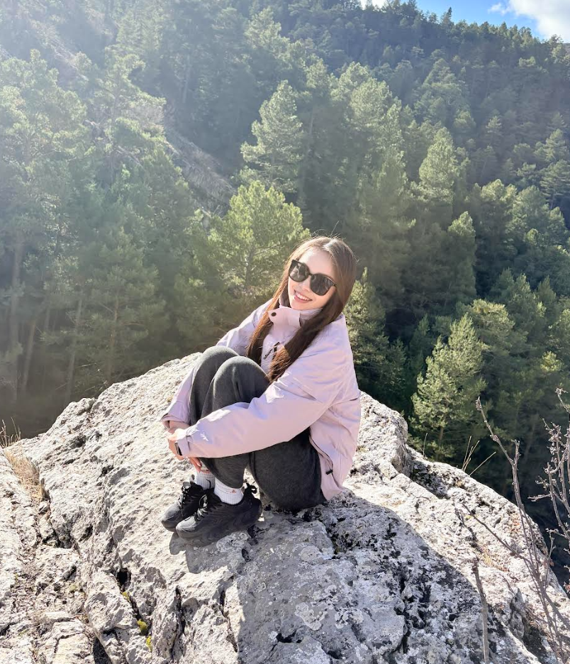
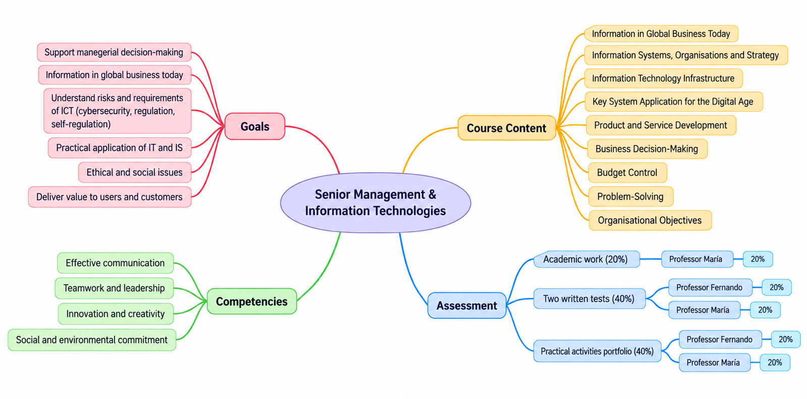
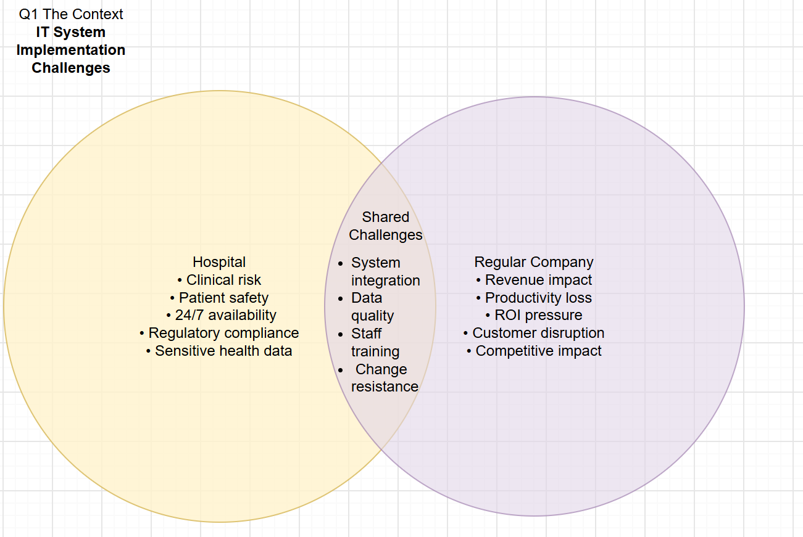
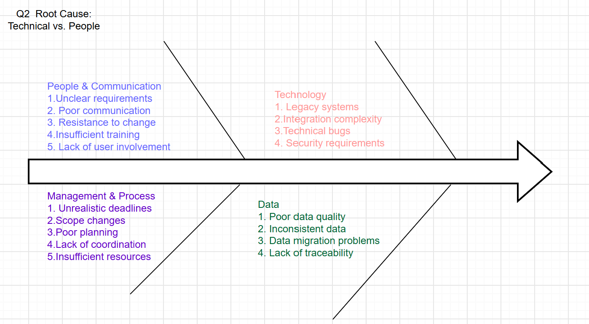
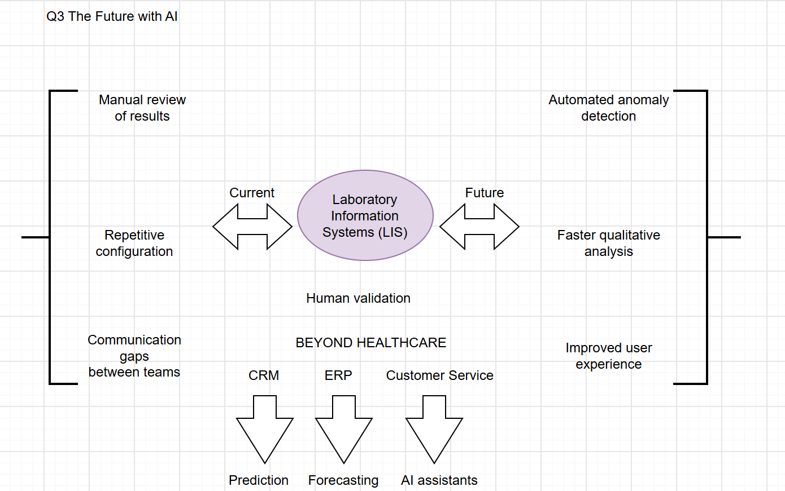
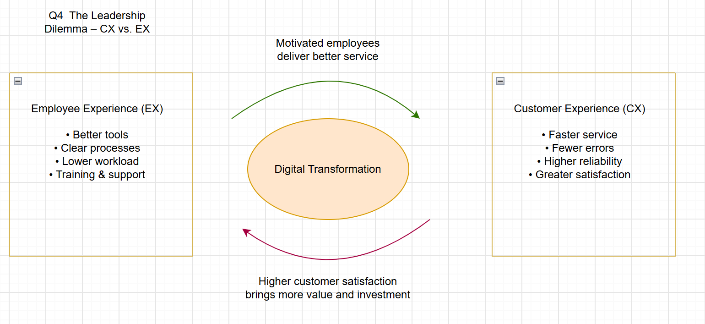

Bella

Xinyu (Bella) I’m from China and currently live in Spain. I used to work as a livestreamer, and now I work as a customer service manager.
My keyword in life: Adventure.
Adventure.
- Traveling
- Extreme sports
- Reading
- Recording
Coursework
First activity

09.22 individual task
https://drive.google.com/file/d/1yPw-z6DD6ve9EVPWh_ufZv5opqdJrKj4/view?usp=sharing




1/10 Personal takeaway
My main takeaway from Rosenberg’s Practical AI Governance is that AI governance is not only a concern for companies or governments, but also something that directly affects us as individual users. I use AI almost every day, and while I enjoy the convenience it brings, I sometimes worry about how much personal information I share and whether I really know how that data is stored or used.
This made me realize that good AI governance should not simply mean having more rules.
It should create transparency, clear responsibility and continuous monitoring, while giving users more control over their own data.
For me, the real challenge is finding a balance between innovation and protection, so that we can benefit from AI without losing trust or privacy.